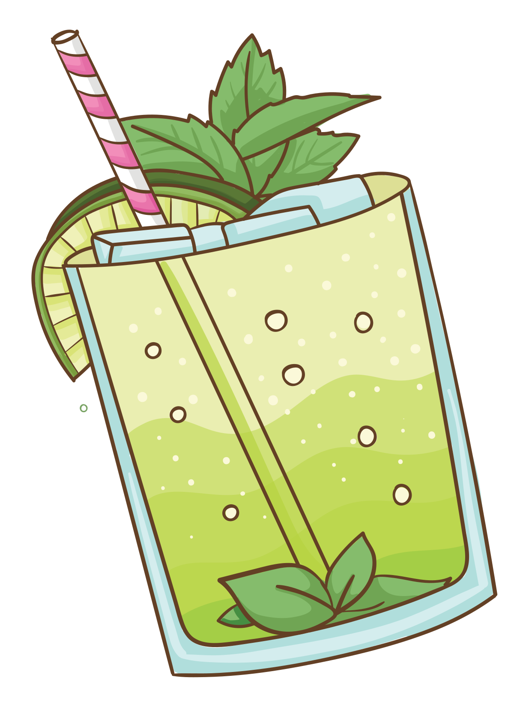

To není jenom drink
To je hugo
Do sklenky vymačkáme šťávu z limetky. Přidáme mátu, kterou jsme rozmačkali v hmoždíři a bezový sirup. Promícháme a vlijeme sekt a sodu.
Doplníme drceným ledem a ozdobíme limetkou.
ňami~ňami
